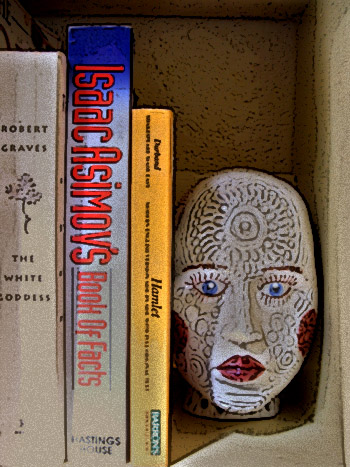

Originality
by Henry Quince
Wer kann was Dummes, wer was Kluges denken,
Das nicht die Vorwelt schon gedacht?
……………………… — Goethe, Faust (II, 2, 1)
.
What can we say that hasn’t been said
over and over again?
We’re born, we live, one day we’re dead—
what can we say that hasn’t been said?
What truly new thought can come from the head
of anyone, mad or sane?
What can we say that hasn’t been said
over and over again?

 |
|